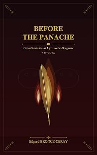

Avant le Panache
From Savinien to Cyrano de Bergerac — the prequel play
by Edgard Bronce-Ceraypar Edgard Bronce-Ceray
The bookLe livre
Rostand gives us a knight in full armour. This play concerns itself with the forge. Mauvières, before Paris: a boy called Savinien who would rather read than load the cart, a father who measures a man in sacks of flour, and the slow discovery that a wounding word can be answered with a better one. Panache is not a gift here, it is armour — hammered so as to feel less, dazzling so as not to fall silent. An original prequel in English alexandrines.
Rostand nous présente un chevalier en armure. Cette pièce s'occupe de la forge. Mauvières, avant Paris : un garçon nommé Savinien qui préfère lire que charger la charrette, un père qui mesure un homme en sacs de farine, et la découverte lente qu'à un mot qui blesse on peut répondre par un mot meilleur. Le panache n'y est pas un don, c'est une armure — martelée pour moins sentir, éblouissante pour ne plus se taire. Un prologue original en alexandrins anglais.
From the opening pagesLes premières pages
Cast: ABEL , SAVINIEN , PIERRE, ESPÉRANCE
Setting: The courtyard of Mauvières at daybreak. Upstage, a hearth smoulders. Stage right, the kitchen garden. The action spans from dawn to evening.
(Savinien , seated on a step, reads. Abel strides from the front door, a ledger under his arm.)
ABEL
Savinien ! Still dreaming while the world awakes? The dawn has drawn its note, the farmyard shakes With life — the rooster crows that labour's hour Has struck for living men — yet you devour A book?
SAVINIEN
Forgive me, Father — but these pages pull...
ABEL
A book? White bread is baked in ovens, fool — Not in the soul! Your heroes made of ink Won't sow a field of grain or mend a chink Against the winter cold or knead the bread. See: sacks, and casks, and ledgers — there instead Our business lies! A book stands straight and tall When shoulders bear its weight — that's worth it all.
SAVINIEN
I want to join the two!
ABEL
The two?
SAVINIEN
The toil... the flight! By day I'll serve your duties; then, by night, My pages — I will carry scythe and rake, But leave me, Father, words for my own sake!
ABEL
Then promise me: at dawn, when morning's due, I'll find you in the fields.
SAVINIEN
I promise!
ABEL
True?
SAVINIEN
I salute This oath, my father: when the sun bears fruit, Your ledgers and your land shall have my arms! I'll keep your books, I'll weigh your harvest's charms, And when the night descends, I'll open wide My store of words and light where fates reside!
ABEL (laying a hand on his shoulder)
Be there. That's all. Take heed: zeal has its vice — Let it warm your duty, not your soul's device. (Pointing to the barns.) Go — fire's already caught; I'll bring the grain. Show me a Gascon's strength is not in vain!
(He exits. Pierre appears from the kitchen garden, basket on his arm, a wry smile.)
PIERRE
Good Lord! My brother, here!
SAVINIEN
Pierre!
PIERRE
O captain brave, Whose paper vessel sails — toward what wave? While I row galley-chained among the greens, Monsieur hoists sail for Peru and its scenes!
SAVINIEN (laughing)
Mock less, dear brother — verse is worth the hoe —
PIERRE
A verse?
SAVINIEN
Why not?
PIERRE
The mole devours them, though!
SAVINIEN
I'll sow them fresh!
PIERRE
In what soil?
SAVINIEN
In the dawn!
PIERRE
Your verses! Fine! But here, while you look on, The carrots lie in agony from slugs! Come help me, poet of the lofty shrugs, And save from mortal peril our poor greens!
SAVINIEN (taking the basket)
Give here! I'll prove the quill has ribs and means, That verse can sweat as hard as any spade —
PIERRE (amused, but tender)
If tonight, beneath the elm, when work has paid, You give us two good lines — real ones! No air! Words made of blood and bread!
SAVINIEN
I'll craft them fair!
PIERRE
That speak their mind?
SAVINIEN
I'll tell of heroes anchored at their core: To serve and never swerve, to love the more, To hold when all things shake, keep faith each day — Those are my troubadours! My songs! My way!
PIERRE (hand on his shoulder)
Keep straight above all else your soul... and spare Your hands — tomorrow's labour, tonight's affair. Father is not stone: he labours for the table, He grumbles as he stirs — but his heart is able.
SAVINIEN (moved)
I know. I want to seal my double pact right here: To be a son who stands, to serve and persevere —
PIERRE (handing him the hoe)
Then to the cabbage row! That's where you're called. Now scan it well, dear brother: "I serve — and I have hauled The stubborn earth aside!"
SAVINIEN
Does that rhyme?
PIERRE
In verse! With "I persevere" and "my father reigns!" — or worse!
(They work together. A ray of sunlight gilds the courtyard. Transition: evening falls. Espérance and Abel return. Table set, fire rekindled.)
ESPÉRANCE
My son, that furrowed brow? The day was hard?
SAVINIEN
It was. But I have kept my word — in field and yard, And in our ledgers too.
ESPÉRANCE
You see? His hands have served their due.
ABEL (sitting, opening his ledger)
Come, then. I'll show my trade, my ground, my creed: My words are sums.
SAVINIEN
That pay?
ABEL For what you need! The candle! Sit. Look here: three sacks of wheat.
SAVINIEN
Their worth?
ABEL
Fifty sols each. At market, neat, You add, subtract, and bind. Should someone dream?
SAVINIEN
Disaster.
ABEL
Then the estate will list. The beam That holds our bread rests on the total's count — Not on your verse.
SAVINIEN
I know. Yet every amount Inscribed right here is tallying a fight.
ABEL
A step.
SAVINIEN
A step?
ABEL
The farm has gained in might. You see? Your tongue puts wings upon the sums.
SAVINIEN
Is that so wrong?
ABEL
It's good — but hold the balance when it comes To business first! Tomorrow, dawn: I'll see If your arms go as straight as your pen's decree.
SAVINIEN
I'll be there.
ABEL
Without delay?
SAVINIEN
Without delay! I'll keep the ledgers right, And help out at the press. And if the night Allows it...
ABEL
What?
SAVINIEN
I'll add the simple hope Of one small word — no higher than this ember's scope.
ABEL (closing the book)
Good. For tonight, enough. I'd have no ash Weigh heavy on your mind. Let your fire flash To warm you — not consume. Keep your pen; keep your art. But come to the field at dawn.
SAVINIEN
I'm coming!
ABEL
Play your part — The rest will follow.
(Espérance nods. Abel pushes a log; the flame leaps.)
ESPÉRANCE
You see? Two fires can share.
SAVINIEN
Nor do each other harm?
ESPÉRANCE
The one that holds the roof — and one of dreaming's charm.
SAVINIEN
I serve, I hold, I learn — I'll quench no other's blaze.
ABEL
Come now! Go set the table.
ESPÉRANCE
Listen — the soup sings praise!
(Savinien rises. Before exiting, he looks at the hearth, half-voiced.)
SAVINIEN (like a litany)
Let a double fire blaze in me, and not contend: The fire of roof and stone — and that which will ascend, The stage where fate inscribes my name in gold!
Blackout.
Cast: PIERRE, SAVINIEN
Setting: The courtyard of Mauvières. Centre stage, a half-loaded cart, its shafts at rest. Upstage, the old chestnut tree spreads a crimson canopy. The air grows cool; the smell of soup drifts from afar. A bell chimes.
(Pierre drags a sack toward the edge of the cart and staggers under its weight. Savinien appears, a book under his arm; he stops, watches, then quickly sets the book on the fence and rolls up his sleeves.)
SAVINIEN
Let go, Pierre!
PIERRE (turning, surprised)
You?
SAVINIEN
Me! Give me the grip!
PIERRE
Your knee?
SAVINIEN
That too! I want to bend my back and not let slip The weight you bear —
PIERRE
That we bear?
SAVINIEN
That you bear! Why the surprise?
PIERRE (panting, teasing without malice)
Forsaking your fine sonnets...
SAVINIEN
For?
The excerpt ends here — about 1,200 words of the published edition.L'extrait s'arrête ici — environ 1,200 mots de l’édition parue.
KindlePaperbackBrochéContextContexte
The house's theatrical flagship: Rostand translated, extended and transposed. The Panache Trilogy frames the first English translation of Cyrano de Bergerac that keeps the alexandrine — the twelve-syllable line that carries the play's swagger — between an original prequel and an original sequel. The Project then turns to Chantecler, Rostand's fable of the rooster who believes his song makes the sun rise.
Le navire amiral théâtral de la maison : Rostand traduit, prolongé et transposé. La Trilogie du Panache encadre la première traduction anglaise de Cyrano de Bergerac qui conserve l'alexandrin — ce vers de douze syllabes qui porte tout le panache de la pièce — entre un prologue et une suite originaux. Le Projet aborde ensuite Chantecler, la fable du coq qui croit que son chant fait lever le soleil.
The whole programmeTout le programme